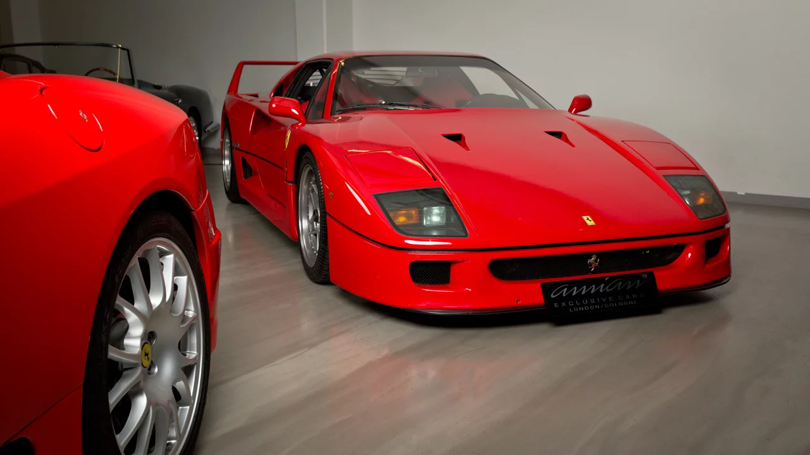

<!-- 2) კომენტარებით ახსენით რა არის პიქსელი. შემდეგ შექმენით ფოტო და შეუცვალეთ მას სიგანე და სიმაღლე. -->

<!-- პიქსელი- არის სურათის უმცირესი ელემენტი თითო პიქსელი წარმოადგეს 1 კონკრეტულ ფერს -->



<!-- 3) კომენტარებით ახსენით რა არის <html>, <head> და <body> თეგი. -->

    <!-- html-არის ძირითადი ტეგი რომლის შემდეგაც იწერება ყველა სხვა ტეგი -->
     <!-- head-ტეგში იწერება ინფორმაცია ვებსაიტის შესახებ მაგალითად სათაური <title> -->

        <!-- body-ტეგი რომელშიც იწერება ყველაფფერი რაც მომხმარებლის ეკრანზე ჩანს. -->


